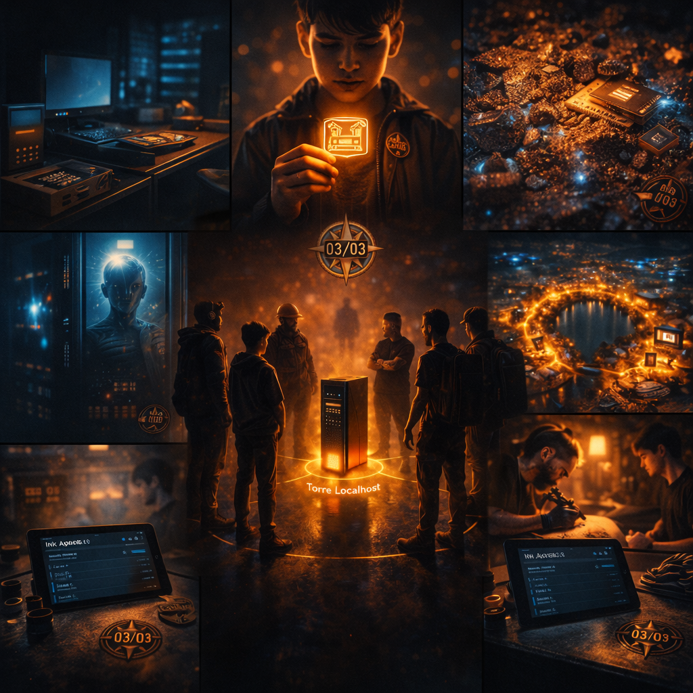

Amarelinha: Os Cinco Atos
O Espelho da Jornada
Lucas olha para o desenho na lousa e pergunta: "O que já funciona e o que ainda é ideia?" Essa é a primeira pergunta da jornada. Um mapa bonito não é prova de um caminhão acompanhado em campo.
É preciso separar duas aplicações: CSO Frotas Web, gestão de frota online, e CSO Transportes Desktop, em desenvolvimento. O acompanhamento por Virtual Tracker é uma capacidade futura planejada para a integração entre elas. Não está disponível no Frotas atual.
Os Cinco Atos: Anatomia da Confiança
Ato I: Geometria — O Mapa
Um caminhão não navega no vazio. Em um exemplo hipotético entre Campo Largo e Curitiba, o planejamento poderia separar saída, pontos de passagem e chegada. Antes de desenhar círculos na tela, a equipe precisaria definir o que cada ponto comprova.
- Saída: onde começa a viagem e quem registra esse início?
- Passagem: basta estar perto do local ou é necessária uma confirmação humana?
- Chegada: entrar na área equivale a entregar a carga? Não necessariamente.
A fórmula de Haversine estima a distância sobre uma esfera entre duas coordenadas. Pode ajudar a comparar uma posição com uma área de referência, mas não comprova descarga, assinatura ou recebimento. A precisão do aparelho e as condições do local também importam.
Ato II: Dinâmica — O Movimento
Uma coordenada sem horário pode enganar. Para discutir um acompanhamento futuro, precisamos perguntar quando a posição foi obtida, quando chegou e quanto tempo passou desde a última observação. "Conectado" não significa "posição instantânea".
No desenho planejado do Virtual Tracker, o serviço online autentica, mantém a presença e encaminha mensagens cifradas de ponta a ponta. A leitura dos dados, o mapa e o histórico ficam no desktop. O servidor não deve ler nem persistir a telemetria; usa apenas memória transitória limitada para o encaminhamento.
Esse desenho exige conexão para acompanhar a viagem e não prevê fila offline de posições para envio posterior. Não prometemos aqui um APK publicado, envio a cada 30 segundos, leitura de RPM ou sensor Bluetooth de massa. Nada disso se torna funcionalidade disponível por aparecer numa história.
Ato III: Sombra — Reconhecer o Que Não Sabemos
Perder o sinal de localização e perder a conexão móvel são falhas diferentes. Um telefone pode obter uma posição e não conseguir transmiti-la; também pode ter internet sem uma localização confiável. Misturar os dois casos prejudica a decisão de quem acompanha.
Extrapolar a última velocidade em linha reta é uma hipótese, não navegação inercial comprovada. O veículo pode parar, fazer uma curva ou mudar de caminho. Quanto maior o intervalo sem medição, menos justificável é mostrar um ponto estimado como se fosse observado.
Neste ato, a recomendação de projeto é simples: mostrar a última observação com seu horário, explicitar a falta de atualização e orientar a conferência por outro meio quando necessário. Um ícone em movimento não deve preencher o vazio com uma localização inventada.
Não há promessa de rastreamento sem rede, cronômetro de alerta homologado ou recuperação automática do percurso perdido. O "fantasma" da narrativa serve para lembrar a incerteza, não para escondê-la.
Ato IV: Massa — Conferir Antes de Concluir
A conservação da massa inspira uma pergunta útil: as entradas, saídas e medições fazem sentido juntas? Mas uma operação de transporte não é um sistema fechado de laboratório, e duas pesagens não explicam sozinhas o que aconteceu entre elas.
Exemplo hipotético: uma carga aparece com 30.000 kg na origem e 29.500 kg no destino. A diferença aritmética é de 500 kg. Isso não prova desvio: é preciso conferir tara, balanças, documentação, retiradas autorizadas e condições da carga.
- Identificar equipamento, horário e responsável por cada medição.
- Verificar calibração e incerteza das balanças utilizadas.
- Registrar eventos intermediários que possam explicar a diferença.
- Definir tolerâncias a partir do processo e das exigências aplicáveis, não de um percentual arbitrário.
- Tratar divergência como motivo de conferência, não como acusação automática.
Sensores de massa, alarmes e mensagens automáticas não são entregas anunciadas do CSO neste artigo. São temas de estudo que exigiriam escopo próprio, validação e cuidado com as pessoas envolvidas.
Ato V: Céu — Encerrar com Evidência
O último quadrado da amarelinha não é um selo de infalibilidade. Uma viagem só pode ser avaliada à luz dos registros realmente disponíveis: o que foi observado, o que falta conferir e quem recebeu a carga.
Se duas pessoas descrevem uma ocorrência de maneiras diferentes, o registro pode ajudar na apuração. Não consegue reconstruir, por mágica, o instante exato de uma variação entre duas medições. Lacunas também precisam constar da conclusão.
O valor da proposta está em organizar responsabilidade e investigação, não em transformar uma cor verde no painel em prova de que nada deu errado.
Problemas Complementares, Produtos Distintos
O PDV cuida do caixa local. O Hub se destina à gestão interna de encomendas em pontos de retirada e está em pré-release. O Ink Agenda atende agenda, clientes e financeiro de serviços com hora marcada. Não são nomes diferentes para o CSO.
Formação em lógica, estudo de identidade digital e simulação técnica também têm lugar no portfólio. Essa proximidade de ideias não comprova integração automática, compartilhamento de banco ou comunicação pronta entre aplicações.
Roadmap, Não Foguete de Palco
Transportes Desktop e a integração do Virtual Tracker são planejamento, sujeitos a prova em dispositivos móveis, capacidade e homologação. Os cinco atos não são um contrato de entrega: checkpoints, sensores de massa e estimativas de posição não passam a integrar o escopo de uma versão só por terem sido discutidos aqui.
Quem precisa de gestão de frota hoje deve avaliar o CSO Frotas pelo que ele oferece online, sem GPS. Quem procura acompanhamento de viagens deve distinguir essa necessidade do produto atual e consultar a vitrine do Transportes, sem presumir que o desenvolvimento já virou download.
A Reflexão Final
Lucas olha outra vez para a lousa. A história continua com cinco atos, mas a pergunta mudou: em vez de "o sistema garante?", agora ele pergunta "qual evidência sustenta esta conclusão?".
Para começar amanhã, mesmo sem rastreador novo, uma equipe pode revisar os registros de saída e chegada, combinar como comunicar uma interrupção e definir quem confere uma divergência. Software ajuda quando respeita esse processo; não substitui toda a responsabilidade humana.
Seja bem-vindo, Lucas. Você conhece os cinco atos. Agora sabe a diferença entre arquitetura promissora e promessa indevida. E essa diferença protege a confiança no produto.
Nota editorial: personagens, diálogos e exemplos são fictícios e didáticos. Este ensaio não comprova operação de campo, integração entre produtos ou funcionalidades publicadas. A revisão de 19/11/2026 distingue o Frotas online do Transportes e do Virtual Tracker planejados, sem alterar a data original do artigo.
Hashtags
Contato
- E-mail: suporte@caracore.com.br
- Site: www.caracore.com.br
- LinkedIn: Cara Core Informática
Artigo publicado em 14 de novembro de 2026
© 2026 Cara Core Informática. Todos os direitos reservados.